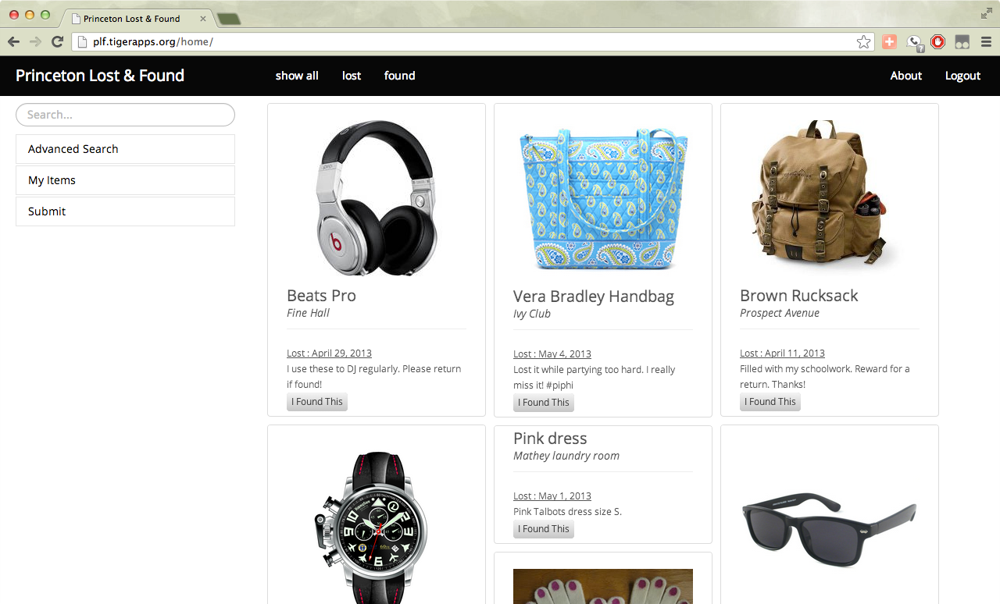

Homepage
Here's the home page, and also the only page, of Princeton Lost and Found. On the top, you can see a permanent navigation bar: this bar provides login/logout functionality, and the ability to sort by lost and found items. On the left, we have a permanent utility bar: you can dynamically search for listings by entering any search terms in the "Search" bar and pressing Enter. We also have access to the Advanced Search, My Items, and Submission tabs. Finally, we've got our item listings neatly ordered on the right, from newest to oldest submissions. Claim an item by clicking the "This is Mine" or "I Found This" buttons!
Lost
You can dynamically sort the listings by clicking on the "show all", "lost", and "found" buttons on the permanent top bar. This sorting is achieved through Isotope's library, and is a nice little animated touch for the user. Click on the "Lost" button to see lost items.
Found
You can also sort to see only the found items, by clicking the Found button. Congratulations! You're a pro button clicker!
My Items
On the left, you can see the list of items that you currently have posted as lost or found. Resolving an item means that you've either found your lost item, or returned a found item. Clicking "Resolved?" will remove the item from our database.
Advanced Search
Our Advanced Search sorts by all possible sets of information associated with our listings: Lost/Found, Item name, Category, Location, Date, and Description. Users can select ranges of dates to search for their items, from one day to an entire month.
Submit
If you've lost a treasured item or found something that doesn't belong to you, submit it to Princeton Lost and Found! Clicking on submit will take you to this form. It's pretty intuitive: fill out the available information, and click submit! If your submission seems similar to any items already in our database, we'll pop up a notification with recommended items to check.
About
Our About page exists primarily to inform users about our existence and the hard work that we put into this project. However, we've also found it important to give users necessary information about the website itself, such as spam limits and removal times. This page is our catch-all page for information, copyrights, or updates that would be added in PLF's future as a TigerApp.